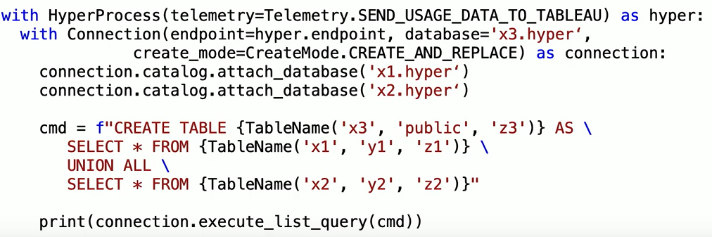

Hyper API
-
Part of Data Connectivity component of Tableau Developer Tools
- Connector SDK
- Hyper API
- Web Data Connector
-
When to Use
-
Custom data source without out of the box Tableau connector
-
Custom ETL process with integration in Tableau
-
Perform ETL on data, route results to a .hyper file (Tableau
extract), then publish this to Tableau
- Develop application with integration to Tableau
- Can use with Python, Java, C++, .NET
-
What you can do with it
- Create .hyper files
- Insert data into .hyper files
- Single table or multiple tables
- Load data directly from CSV files
- Create, update, delete, read data from .hyper files
- SQL based API
Hyper
-
Tableau's next generation general purpose data engine
- SQL Based
- Scalable
- Optimized for hybrid workloads (reads and writes)
Hyper Files
-
Contain
-
When switching from Live to Extract, you end up with a hyperfile
-
This is usually a single table named Extract within a namespace
called Extract
-
Newly created database contains
How It Fits Into Your Workflow
-
Within your application..
-
Your client code
- Calls the Hyper API front end
-
Hyper API front end (part of the api that is shipped in four
different languages)
- Interacts with the Hyper API backend
-
Hyper API backend
- .dll / .so
- Shared library since this does the heavy lifting
- Optimized machine code
-
Hyper process
- This is the Hyper database engine
- Hyper API creates and communicates with this
- Uses a SQL connection to communicate
- Can have multiple SQL connections simultaneously
- Not recommended to have multiple processes simultaneously
-
Only SQL is used to communicate, so convenience classes are
translated into SQL
-
.Hyper files
- Database = extract = Hyper file
-
You can have multiple hyper files attached to the same Hyper
process
What Does It Do / What Does It Not Do
-
Allows for the creation / read / update of local .hyper
files
- This means the local machien where you update your script
-
It does not
- Need any other Tableau product installed
- Interact with any other Tableau product
-
Cannot interact with Tableau server
-
Does not allow upload / download / access to extracts on
Tableau server
- Use the Rest API to interact with Tableau server
What Can You Do With a .Hyper File Connection
-
Data Injestion
-
Create tables and define columns - can be done with high level
API
-
Insert / append rows into a table - can be done with high level
API
-
Bulk insert data from CSV into table - done with SQL
-
Faster than reading each line yourself and inserting rows
individually
-
Update / Deletes
- Update / change data in a table
- Delete rows from a table
- Drop a table
- Alter the schema of a table
-
Read data
- Scan a table
-
Do complex SQL query on one or multiple tables
-
No longer limited to just reading data from the Tableau
dashboard
- These can span multiple databases
-
Read metadata
- Read schemas and tables - can be done with high level API
- Read columns of tables - can be done with high level API
-
Read data types of columns - can be done with high level API
- When you do an extract, you create a hyper file
-
When you create a hyper file programatically,
- This contains data
-
Does not contain information on how you got the data into the
file
-
When switching from Live to Extract on the server
- It does contain information on where the data come frome
- Telemetry object sends annonymous usage data to Tableau
-
Always has the following two lines
- Connect to a HyperProcess
-
Open a connection and attach a database to it
-
This can be done with a convenience method or explicitly
attaching it
-
Always close a connection so the file does not remain locked
Names
- Names are case sensitive
-
Qualified vs Unqualified
-
A database can contain multiple schemas that have a table with
the same name
-
When querying a database with multiple schemas, you must qualify the
schema name if there is ambiguity
-
When querying accross databases, must further qualify with the
database name
-
SELECT * FROM "x"."y1"."z"
-
This is only necessary when multiple databases are attached
-
Always user name classes - never use raw names in SQL strings
-
Escaping correctly is difficult, particularly with integrating
user input
- Error prone
-
Hyper API has classes to handle names
-
class Name
- An escaped, unqualified name
-
class TableName
- An escaped table name
-
Can include options to specifiy a schema and database
Data Types
-
Numeric
- small_int
- integer
- big_int
- numeric
- double
-
Text data
- text
-
varchar - NEVER USE - only added to conform to SQL
standard
-
char - NEVER USE - only added to conform to SQL
standard
-
Date & Time
- date
- time
- timestamp = date + time
- interval
-
Other
Multiple Databases
-
Use cases
- Multiple versions of the same dataset
- You can attach multiple databases to the same connection
-
Join data from two hyper files in a query
-
Union two or more hyper files into a new hyper file

Exploring an Extract
-
The connection object has a catalog property that can be used to get
schema metadata
-
Use to find
- Tables names in a schema
- Table definition
- Column definition